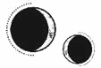

CAPÍTULO 32
Mayus 1786
Que Morrough fuera a salir del país llevándose a tantos inmarcesibles consigo era la oportunidad que la Llama Eterna había estado esperando, así que, como una máquina bien engrasada, la Resistencia enseguida comenzó a preparar el ataque.
Crowther había estado diseminando la información que Ferron les había hecho llegar a lo largo de los últimos meses como si los mapas, los datos sobre las patrullas y sus rotaciones, las cadenas de mando, las jerarquías y los contrataques en caso de enfrentamiento con la Resistencia provinieran de distintas fuentes.
Los batallones estaban ansiosos por actuar.
Sin embargo, Helena sentía bajo la piel un implacable pavor que no dejaba de crecer. ¿Y si estaba todo preparado? ¿Y si Ferron había mentido y la información que les había dado era una trampa? No dejaba de pensar en lo extraño que se había comportado durante su último encuentro.
El personal médico aguardaba el regreso de los combatientes en vilo, atrapado entre la esperanza y el miedo. Entonces las sirenas que anunciaban la llegada de los camiones empezaron a sonar y cada rincón del hospital quedó abarrotado de heridos. No había espacio para tanta gente.
Helena ni siquiera pudo asimilar la angustiosa sensación de culpa que se adueñó de ella al ver las secuelas de la batalla antes de ponerse manos a la obra.
«Es todo culpa tuya. Deberías haberlo sabido. Ferron es un monstruo. Un traidor nato, igual que su padre».
Jamás había sanado a tantas personas en un periodo tan breve de tiempo. El frenesí de la tarea hizo que el amuleto que colgaba del cuello de Helena acabara ardiendo contra su piel y que dos de las aprendizas consumieran toda su resistencia y se desmayaran de agotamiento.
Pasó más de un día antes de que les informaran de que no habían perdido. El ataque no había sido un fracaso, sino un éxito rotundo. La Resistencia había recuperado la zona portuaria y una buena parte de la isla Este. Aunque el combate aún seguía en el extremo sudoeste de la isla, todo apuntaba a que la victoria sería inminente.
Pese a esa confirmación, Helena no terminaba de creérselo. No dejaban de llegar heridos. La Resistencia había encontrado prisiones llenas de disidentes y había descubierto que uno de los edificios más grandes junto a la zona portuaria se había estado usando como laboratorio, así que regresaron con camiones llenos de suministros médicos y utensilios que Helena llevaba años sin ver. Encontraron sedantes y antisépticos de verdad, cajas y cajas de resina de opio, gasas y vendas limpias.
Pero su alegría duró poco, pues, junto a los suministros, llegaron también las víctimas de los experimentos realizados allí. Incluso los miembros del personal, quienes durante años habían mostrado una entereza inquebrantable, se derrumbaron al ver el estado en que aquellas personas se encontraban. Muchos de ellos tuvieron que retirarse.
Resultaba que no solo habían estado desarrollando quimeras a partir de animales. Aquellas personas habían quedado casi irreconocibles después de haber sido sometidas a todo tipo de experimentos que escapaban a su comprensión. Las habían desmembrado para luego reensamblarlas, y eran muchas las que habían llegado en ese estado.
La responsabilidad de tratarlas cayó sobre Helena. Los cirujanos no sabían qué hacer y las aprendizas se veían sobrepasadas por la situación. Aunque ella tampoco tuvo demasiado éxito. Por mucho que lo intentó, no consiguió salvar a ninguna de las víctimas del laboratorio.
Para los combatientes, la reconquista fue rápida. Habían recuperado lo que los inmarcesibles habían tardado años en ocupar con un único ataque bien coordinado. Se trataba de un triunfo militar que pasaría a la historia.
En cambio, para el hospital fue una pesadilla interminable.
La noticia del regreso de Morrough estaba envuelta en rumores que aseguraban que se había desatado una intensa agitación entre las filas de los inmarcesibles mientras buscaban culpables. Luego, llegaron los contrataques y los intentos de recuperar la zona portuaria.
Pasaron semanas antes de que la situación se estabilizara y el personal médico pudiera retomar sus turnos normales. Crowther e Ilva reclutaron a nuevas aprendizas. De alguna manera, sabían exactamente quién contaba con una resonancia latente en su interior, incluso si las propias chicas lo desconocían.
Para cuando todo terminó, Helena estaba tan agotada que pasó unos cuantos días sin poder hablar apenas, casi como si hubiera olvidado cómo se hacía.
Cuando Pace la encontró en el cuarto de suministros haciendo un inventario por pura inercia, le dijo que se fuera del hospital y que, salvo en caso de emergencia, no le permitiría regresar hasta que hubiera descansado cuatro días como mínimo.
Helena quiso retomar sus obligaciones habituales, así que, cuando llegó el martis, se levantó al amanecer, cogió su bolsa y salió de la ciudad. Pasadas las inundaciones de la primavera, la vida había regresado al humedal.
La luz se reflejaba en las alas de los insectos que danzaban en el aire, mientras el sol lamía la cordillera que se extendía por el este y bañaba sus cumbres de oro, y el viento, que por fin había amainado y ya no sacudía los juncos secos, susurraba entre la hierba. Los gorjeos de los pájaros lo inundaban todo. El humedal estaba exuberante, lleno de vida. Helena podría haberse pasado horas recolectando y todavía quedarían hierbas y recursos suficientes. Pero se limitó a coger lo que consideró más valioso antes de lavarse las manos en una charca de color verde alga y, después, se encaminó hacia el Reducto.
Casi no había tenido tiempo de pensar en Ferron, pero decidió que lo mejor sería comprobar si le había dejado algún mensaje. No había recibido órdenes de Crowther desde el ataque.
Lo vio en cuanto abrió la puerta del módulo. Estaba encorvado, con una cadera apoyada contra la mesa, y le colgaban los brazos sin fuerza a ambos lados del cuerpo.
—Tienes una pinta horrible —le dijo en cuanto la vio entrar.
—Pues tú no te quedas atrás —replicó ella parándose en seco.
Ferron se rio con tirantez.
—No me digas.
Al verlo, Helena se sintió demasiado conmocionada como para contestar. El chico estaba demacrado, como si hubiera perdido aún más peso, y tenía todos los huesos del cráneo marcados.
Parecía…
… un cadáver.
Le dio un vuelco el corazón.
Su piel estaba gris y apergaminada, y el pelo, de color más oscuro, sucio y despeinado, le caía sin vida alrededor del rostro. Era como si se hubiera pasado esas últimas semanas sin comer, dormir o bañarse.
—¿Eres…? ¿Eres un…? ¿Estás muerto? —se obligó a preguntar.
No sabía si lo podían matar y luego convertirlo en un liche dentro de su propio cuerpo. ¿Era siquiera eso posible?
Ferron le ofreció una sonrisa que hizo que se le partiera el labio inferior. Un hilillo de sangre le cayó por la barbilla, pero la herida se le curó enseguida.
—Es lo que parece, ¿no? Pero no, sigo… vivo.
—¿Qué te ha pasado?
Se acercó a él, aunque le daba miedo tocarlo por si se desintegraba.
—Bueno —dijo Ferron tras respirar entrecortadamente—, como ya habrás oído, al Sumo Nigromante no le ha hecho ninguna gracia lo de la zona portuaria. —Se quedó sin fuerza para continuar hablando y se le cayó la cabeza hacia delante, pero entonces se irguió de golpe, con el rostro retorcido en una mueca de dolor—. Una faena… para el comandante a cargo de la zona.
Helena se sintió desfallecer. No…, era imposible. Ferron había ido con Morrough y los demás a Hevgoss.
—Pero esa zona no es responsabilidad tuya. —Negó con la cabeza—. Está… El comandante es… es…
No recordaba su nombre, pero no era él. De haber estado Ferron al mando, Helena lo habría sabido. Su rango no era lo bastante alto como para tener una zona tan importante a su cargo.
—Hace poco hubo un cambio de líder —dijo él con voz algo ronca—. Pero da igual. ¿Ha salido bien lo del ataque? Imagino que sí, porque habéis recuperado la isla, pero… —Tragó saliva antes de continuar—: ¿Crees que podréis conservarla? ¿Os quedan suficientes soldados?
Se suponía que no debía contarle nada, pero era tan evidente que estaba sufriendo que no pudo morderse la lengua.
—Más de los que esperábamos —admitió.
Ferron volvió a tragar saliva e hizo un leve asentimiento.
—Bien. —Se le cerraron los ojos por un momento—. Algo es algo, supongo. —Tomó aire con dificultad—. Debería irme. Solo… quería saber… No volveremos a vernos.
Trató de erguirse, pero entonces se desplomó. Tuvo que agarrarse a la silla y dejarse caer sobre ella, incapaz de reprimir un jadeo suave, casi agonizante. Cuando volvió a intentar ponerse de pie, fue como si los brazos no le respondieran. Cada vez le costaba más respirar.
—¿Qué te ha pasado, Ferron? ¿Qué te han hecho? —le preguntó la chica con la voz aguda por los nervios mientras revoloteaba a su alrededor sin saber muy bien qué podía hacer.
Él cerró los ojos e inspiró entrecortadamente.
—N-no te metas donde no te llaman, Marino.
Helena se acercó a él como si fuera un animalillo herido, con las manos en alto y las palmas a la vista.
—Sé que estás herido, pero a lo mejor yo te puedo ayudar —le dijo con la mayor delicadeza.
—No hay nada que puedas hacer —replicó él con una carcajada ronca.
—Déjame intentarlo. —Estaba ya lo bastante cerca como para ver que las venas que le corrían por el cuello no eran azules, sino negras como el veneno—. No voy a hacerte daño.
Ferron abrió los ojos de golpe y la rabia le iluminó el rostro.
—No finjas que te importo —le escupió—. Y no te hagas la tonta. Seguro que sabías que pasaría esto.
Ella negó con la cabeza.
—De haber sabido que te harían daño, habría venido antes.
A juzgar por su apariencia, su salud había ido deteriorándose poco a poco a lo largo de las semanas. Aquel desgaste no era algo que surgiera de un día para otro.
Si era verdad que había estado al cargo de la zona portuaria durante los ataques, entonces le había pasado toda aquella información a la Llama Eterna siendo consciente de las consecuencias que eso tendría para él mismo.
—Por favor —extendió una mano—, déjame ayudarte.
—Esos hierbajos del humedal no van a servir de nada. —Se le retorció el rostro de dolor al intentar incorporarse de nuevo—. ¿Qué vas a hacer tú? Si no eres más que una jodida médica.
Helena tragó saliva con fuerza.
—Te daría la razón, pero no soy una simple médica.
Le tocó la mejilla con la yema de los dedos sin ocultar su resonancia.
Sabía que estaba poniendo en peligro la misión, pero, si Ferron moría, todo estaría perdido. Helena estuvo tentada de apartar la mano en cuanto su poder entró en contacto con el cuerpo del chico, porque el talismán que residía en su pecho irradiaba tal cantidad de poder que estuvo a punto de quemarle las terminaciones nerviosas. Sintió cómo se abrasaban todas las células de su cuerpo.
Se estaba muriendo, una y otra vez. Estaba tan al límite que su organismo dejaba de responder, solo para regenerarse al instante y volver a fallar. Era como si estuviese vivo y muerto a la vez, atrapado en una especie de bucle regenerativo sin salida.
Ferron se apartó como si fuera ella quien lo había quemado y no al revés.
—Puta manipuladora. Sabía que había notado tu resonancia cuando perdí el brazo.
Ella dejó caer la mano y evitó su mirada acusadora.
—Me ordenaron que no te lo dijera.
—¿Y por qué me lo dices ahora? —preguntó entornando los ojos.
—Porque ya da igual. Si no te ayudo, morirás.
—No creo que tenga tanta suerte —dijo en tono sombrío.
Helena extendió la mano para rozarle el brazo.
—¿Qué te ha pasado en la espalda?
Ferron cerró los ojos como si estuviera demasiado cansado para mantener aquella conversación. Las mismas venas negras del cuello también le surcaban los párpados.
—Ya que estás tan decidida a ayudarme, te animo a que lo veas por ti misma.
Muy despacio, con sumo cuidado, Helena le soltó la capa y, al quitársela, Ferron se encogió de dolor, pero no dejó escapar sonido alguno. El pestilente olor de los efluvios de las heridas de varias semanas inundó el aire cuando le desabrochó la camisa y se colocó detrás de él para bajársela por los hombros con cuidado.
No llevaba vendas. Su espalda entera, desde los hombros hasta más abajo de las costillas, era una herida abierta y supurante, como si hubiera sido creada quirúrgicamente.
Le habían grabado un sello alquímico en la piel.
Cuando Ferron tomó aire, Helena vio que incluso el blanco de sus costillas estaba salpicado de marcas. Sin embargo, las incisiones de los hombros eran las peores: no solo alcanzaban el hueso, sino que también lo habían perforado. En los omóplatos le habían soldado unas piezas de aleación de lumitio para mantener el sello intacto y activo.
Ni siquiera las habilidades regenerativas de Ferron eran suficientes para contrarrestar una lesión de tal magnitud.
Los sellos podían tener una finalidad meramente ilustrativa, utilizados para dejar constancia de un proceso o calcularlo de forma visual. Sin embargo, también se utilizaban para llevar a cabo transmutaciones o alquimizaciones complejas cuando la simple manipulación resonántica no era suficiente, así como para trabajar con compuestos de origen orgánico, que tendían a ser más volátiles. Solían dibujarse con tiza o carboncillo, o grabarse sobre una superficie con un estilete. Pero Helena jamás había visto uno inscrito en la piel de una persona.
—¿Por qué…? —Le falló la voz—. ¿Por qué te harían algo así?
—Bueno… —Ferron habló despacio, con voz distante—. Se barajaron muchas ideas y toda clase de castigos para hacerme pagar por mi… error. Bennet estaba indignado por haber perdido su laboratorio, a sus víctimas y sus experimentos. Y, como llevaba un tiempo queriendo hacer pruebas en un inmarcesible, propuso que le permitieran encargarse de mi castigo, argumentando que él había sido quien se había llevado la peor parte tras perder la zona portuaria. —Guardó silencio durante un momento y añadió—: El Sumo Nigromante ha dicho que me perdonará si sobrevivo.
Helena se sentía incapaz de apartar la mirada de la herida. Alrededor de las incisiones, la piel de Ferron presentaba claros signos de septicemia; la infección se había extendido hasta la sangre.
Le posó una mano en el brazo, con miedo de rozar el sello, y Ferron se encogió ante su contacto. Su cuerpo seguía intentando regenerarse, reparando las heridas que conformaban el sello, pero, al tener intacto su sistema nervioso, debía de estar sufriendo un dolor inimaginable.
Helena no sabía por dónde empezar, pero no podía quedarse simplemente mirándolo. Intentó insensibilizar la zona de fuera hacia dentro, aunque el efecto no duró mucho. El poder regenerativo de Ferron anulaba sus esfuerzos siempre que encontraba tejido vivo para trabajar. Ni siquiera podía aliviarle el dolor.
Al aproximarse a la herida tanto como pudo, notó que el metal que le habían soldado en los hombros era una aleación de lumitio y titanio, cuya resonancia era tan intensa que Helena la sentía vibrar hasta en los dientes. Le parecía un milagro que Ferron no hubiera perdido la cabeza con aquel material adherido al cuerpo.
Aquella situación la sobrepasaba por completo. Jamás se había enfrentado a una lesión semejante.
—Lo siento, pero no voy a poder curarte.
Ferron soltó una risotada.
—Ya lo sabía.
—Pero… —Helena tragó saliva mientras pensaba— creo que sé cómo ayudarte a contenerla y reducir el daño que te está causando. Tal vez así puedas… sobrevivir. Esa es la condición que te han puesto, ¿no? Que, si sobrevives, no te harán nada más.
Él no respondió.
Tomando su hombro izquierdo como punto de partida, Helena siguió el recorrido de sus venas mediante resonancia, con los dedos a apenas unos milímetros de su piel, guiando la infección hacia una de las incisiones. Cuando una mezcla de pus y sangre casi negra comenzó a brotar de la herida y a deslizarse por la espalda, utilizó la esquina de un pañuelo de tela para limpiarlo con sumo cuidado, evitando que el fluido se filtrara en las demás heridas.
Ferron se estremeció de pies a cabeza y dejó escapar un jadeo ronco, aunque silencioso.
—¿Qué estás haciendo? —preguntó entre dientes.
—Estás sufriendo una sepsis. Te estás muriendo y tu cuerpo ha estado sacando energía de donde puede para regenerarse y mantenerte vivo, pero ya casi no le quedan reservas. La situación es la misma que cuando perdiste el brazo: no podías regenerarte hasta que dejaste de sangrar, así que, para que te recuperes, primero tendremos que combatir la infección.
El chico dejó caer la cabeza y soltó un suspiro entrecortado.
—Menuda suerte que me examinaras a fondo mientras estaba inconsciente, ¿eh?
—Pues sí —replicó ella con tono seco mientras seguía extrayendo la infección.
Cuando volvió a pasarle el pañuelo por la espalda, Ferron gimió entre dientes y sus manos empezaron a temblarle. Con lo del brazo, no había emitido ningún sonido.
Helena se detuvo, pero no dejó caer las manos.
—¿Los calmantes te funcionan?
—No —dijo él con desgana—. El efecto se me pasa enseguida. Ni siquiera puedo emborracharme en condiciones.
—Yo prefiero bloquear el dolor a nivel local, pero también podría estimular un punto concreto en tu cerebro que te hará perder el conocimiento —comentó Helena, tocándole la base del cráneo con gesto vacilante—. No notarás nada y tu cuerpo seguirá funcionando con normalidad, así que no lo interpretará como una amenaza. ¿Quieres que lo intente?
—¿Podrías…? —Se le quebró la voz—. ¿Podrías hacer eso?
—Sí, creo que sí.
Ferron se lo pensó en silencio, mientras se le estremecían las costillas con cada respiración entrecortada.
—Pues inténtalo, supongo. Si no me has matado ya, no creo que lo hagas ahora.
Helena ignoró su comentario.
—Deberías tumbarte.
La mesa estaba algo rota por el centro, pero seguía siendo lo suficientemente estable para soportar su peso. Helena la cubrió con su capa y la convirtió en una camilla improvisada. Al chico le temblaban las manos cuando se agarró a sus hombros para levantarse con un gruñido. Para cuando se dejó caer sobre la mesa, los temblores se habían extendido por todo su cuerpo.
Helena le pasó los dedos por el cabello para encontrar la curva de la base de su cráneo, justo bajo la protuberancia occipital externa. Con un pequeño cambio de energía, sintió que Ferron se relajaba hasta perder el conocimiento.
Trabajaría mucho más rápido sin que este se encogiera de dolor cada vez que lo tocaba. Mientras drenaba la infección y le limpiaba las heridas, no pudo dejar de pensar en cuánto tiempo podrían tener esas lesiones.
Debería haber vuelto antes. Todo era culpa suya. Dio por sentado que Ferron había decidido marcharse y abandonar la ciudad a su suerte, así que se olvidó de él por completo. Le daba tanto miedo que los traicionara que ni siquiera se había detenido a pensar en qué le pasaría si se mantenía fiel a la causa.
Helena dejó las manos temblorosas a escasos centímetros de las heridas limpias mientras decidía qué hacer. Le habría gustado poder arrancarle el metal que le habían incrustado en los huesos, pero el titanio estaba firmemente adherido al tejido.
Se aferró a su amuleto, desesperada por encontrar algo de consuelo.
Aun así, las incisiones y los metales transmutados eran un problema menor en comparación con el sello. Podía sentir la vibración de la resonancia fluyendo por él. Alterar un sello activo siempre implicaba un riesgo, como la pérdida de alguna extremidad, por ejemplo.
De hecho, intentar romperlo podría matarlos a los dos.
Tenía que encontrar la manera de salvar a Ferron, pero el sello había echado raíces en su cuerpo y, al alimentarse de la energía que manaba del talismán, desviaba el poder que debería estar ayudándolo a regenerarse para que circulara por los trazos que lo componían.
Además, no presentaba un círculo de contención que lo limitara, así que permanecía activo todo el tiempo y, a diferencia de lo que ocurriría en un laboratorio, sus símbolos no actuaban sobre un objetivo externo, sino sobre el propio Ferron. El sello desviaba el poder de su talismán, lo transformaba y luego cerraba el ciclo, devolviéndolo a su interior.
Eso habría acabado con cualquier humano normal, pero Ferron no era tan fácil de matar. Aunque tampoco podía cambiar. Helena empezaba a entender cómo se las arreglaban los inmarcesibles para hacerse «inmortales». Ferron no había dejado de envejecer, sino que su cuerpo estaba congelado en el tiempo desde que comenzó a regenerarse. El proceso no solo lo mantenía con vida, sino que impedía que el paso del tiempo o las heridas alteraran su estado físico. Sin embargo, el sello, así como su poder mutado, estaban diseñados con un único propósito: transformarlo, y esa contradicción lo estaba destruyendo a un nivel mucho más profundo que su espalda mutilada.
Había quedado atrapado en un crisol: el crisol de su propio cuerpo. Y sus únicas opciones eran morir consumido por un sufrimiento atroz o someterse a una alquimización que lo transformara en algo capaz de sobrevivir a semejante paradoja.
Helena estudió los símbolos de su espalda, intentando descifrar la función de cada uno. Nunca había visto un sello diseñado para actuar directamente sobre una persona, pero estaba bastante familiarizada con la notación alquímica.
El diseño central era la estrella celestial clásica, correspondiente a los ocho planetas. A las gentes de Paladia les fascinaban los grupos de cinco u ocho. Hasta donde ella sabía, la única excepción era la estrella de siete puntas de la piromancia, que también aparecía en el blasón solar de los Holdfast.
Quienquiera que hubiera grabado aquellos símbolos en la piel de Ferron los había empleado igual que si hubiera usado una fórmula alquímica para expresar un concepto literario. Era habitual que los alquimistas utilizaran la simbología alquímica al escribir, sobre todo en los libros de texto, para asegurarse de que la información solo pudiera ser comprendida por quienes de verdad fueran capaces de interpretarla, pero Helena nunca había visto ese método aplicado a un sello funcional. Cada una de las ocho puntas de la estrella representaba un concepto concreto, mediante la combinación de los símbolos que la componían. Helena analizó meticulosamente su significado: calculador, astuto, devoto, tenaz, implacable, eficaz, resuelto y severo.
Tenía sentido que el sello no incluyera la fórmula típica de transmutación al estar inscrito en una persona, pero la idea de grabar rasgos de personalidad en un ser humano le resultaba espantosa. Si surtía efecto, la combinación de esas ocho cualidades acabaría por imponerse a la personalidad de Ferron, tal vez hasta borrar cualquier otro rasgo que lo definiera.
Probablemente, le habían realizado curas hasta que el metal se había soldado por completo a sus huesos. Las laceraciones estaban interconectadas para que el sello no se interrumpiera en ningún punto y, por la forma en que Ferron había reaccionado cuando ella se ofreció a dejarlo inconsciente, lo más seguro es que lo hubieran mantenido despierto durante todo el proceso.
Cuando puso una mano sobre la de él, a Helena le temblaban los dedos. Ferron tenía la piel fría y delgada como el papel. Pese a que le habría gustado cerrarle las heridas, la interferencia canalizada por las incisiones era tan intensa que destruiría de inmediato cualquier tejido nuevo que intentara crear.
Si lograba estabilizarlo lo suficiente, cabía la posibilidad de que el poder regenerativo de su cuerpo la ayudara a cerrar las heridas, pero eso llevaría tiempo. Tanto como el que habían necesitado para dejarlo en ese estado.
Helena recurrió a su vivemancia para retirar el tejido muerto de su espalda y, luego, rebuscó en su bolsa hasta encontrar el modesto botiquín que había reabastecido poco antes. Consideró la idea de volver corriendo al Cuartel General a buscar más medicinas, pero tardaría demasiado.
Al final, decidió revisar lo que había recolectado aquella mañana, por si algo podía resultarle útil.
Sabía que los calmantes no servirían de nada ante la interferencia transmutacional, pero un tratamiento tópico tal vez funcionara. Al menos, evitaría que las heridas volvieran a infectarse. Usaría un ungüento percutáneo de acción prolongada y, más adelante, hablaría con Shiseo para ver si a él se le ocurría alguna alternativa.
Helena se mordisqueó los labios, sacó una de las pomadas que había preparado con corteza de sauce y dio unos golpecitos en la tapa mientras pensaba en lo útil que habría sido incluir algún opiáceo entre sus ingredientes. Por el momento, tendría que servir para mantener las heridas limpias hasta su próximo encuentro.
Le extendió todo el bote de ungüento analgésico sobre las incisiones y cubrió las heridas con gasas. Luego, le espolvoreó musgo seco para crear un entorno ácido que evitara nuevas infecciones y le vendó toda la espalda.
Debería haberlo despertado en cuanto acabó, pero se le veía tan agotado que Helena decidió dejarlo descansar un poco más.
Le apartó con timidez un mechón de pelo oscuro del rostro. Estaba demacrado; tenía las mejillas, las sienes y los ojos hundidos, y ya no quedaba ni rastro de ese espeluznante aire juvenil que lo había acompañado cuando se habían conocido.
Ahora solo parecía un muchacho roto.
Helena jugueteaba con sus propias uñas mientras se lamentaba por no poder hacer nada más y luchaba contra la tormenta de emociones que se arremolinaba en su pecho. Estaba acostumbrada a detestarlo, a verlo como una amenaza, tanto para ella como para los demás.
Se acordó de él dándole vueltas a aquella moneda de plata, insistiendo en que la Llama Eterna tenía que atacar. Ya entonces sabía que lo castigarían.
Recordó también los comentarios que había hecho estando apenas consciente, cuando había empezado a divagar sobre que provocó a otro comandante para hacerse con el control de una nueva zona. En su momento, Helena no le dio importancia y pensó que era solo orgullo e inconsciencia, pero ahora lo veía con claridad: Ferron había estado preparándolo todo desde el principio para que la Resistencia pudiera ganar.
Podría haberles tendido una trampa fácilmente, podría haberse dedicado a pasarles información falsa y así llevar a cabo el sabotaje perfecto. En cambio, consciente de que tendría que cargar con las consecuencias, Ferron les había dado una ventaja que no habrían podido obtener ni con un año entero de preparativos.
Y todo dando por hecho desde el principio que Helena conocía sus intenciones. Pensar que él había soportado aquella tortura creyendo que ella sabía lo que le esperaba le partía el alma.
Le tocó la sien y se acercó a él para observarlo con detenimiento.
—¿Por qué estás haciendo esto?
Cuando ya no pudo justificar mantenerlo inconsciente por más tiempo, volvió a pasarle los dedos por el cabello y lo despertó con la mayor delicadeza posible para que el dolor no lo golpeara de repente. Mientras recuperaba el conocimiento, Helena le tomó la mano que tenía más cerca, con cuidado de no moverle el hombro, y se la empezó a masajear despacio, desde la palma, nudillo a nudillo, hasta alcanzar la yema de cada dedo. Utilizaba la resonancia para detectar cada músculo agarrotado por la tensión.
Su padre solía darle esos masajes todas las noches, incluso antes de mudarse a Paladia. Decía que las manos de una alquimista eran tan valiosas como las de cualquier cirujano, y por eso había que cuidarlas mucho.
Helena sabía que Ferron no lo necesitaba. Se trataba de un pequeño gesto que solo ella valoraba, pero era todo lo que podía ofrecerle en ese instante.
Supo cuándo recuperó el conocimiento porque la tensión se extendió por todo su cuerpo. Ferron abrió los ojos de golpe y las pupilas se le contrajeron de dolor. Sus dedos se crisparon entre los de Helena, pero permaneció tumbado sin moverse, así que ella continuó masajeándoselos.
Todavía tenía la mirada algo vidriosa.
—¿Qué me has hecho? —preguntó por fin.
—He drenado la sangre infectada y he retirado todo el tejido muerto —explicó tras humedecerse los labios—. Luego, te apliqué un ungüento analgésico y te vendé las heridas. No es el tratamiento más eficaz, pero te aliviará hasta que pueda prepararte algo mejor en el Cuartel General. T-todavía no puedo cerrarte las heridas, pero, cuando hayas recuperado las fuerzas, creo que lo lograremos. Primero debes mejorar un poco.
Ferron apartó su mano de las de Helena y se incorporó despacio mientras ella hablaba. Cada movimiento debía de ser un suplicio, pero no emitió ni un solo sonido. Se tambaleó como si estuviera a punto de desmayarse cuando se bajó de la mesa.
—Da igual —dijo antes de coger su camisa—. No es tu trabajo curarme.
—Hay que vigilar la evolución de las heridas para evitar que se infecten de nuevo o empeoren. Y tendrás que cambiarte los vendajes al menos una vez al día —apuntó ella dando un paso adelante para bloquearle el paso.
—Pues mala suerte.
—Ferron. —Le quitó la camisa de las manos—. Sé que no estás acostumbrado a que cuiden de ti, pero necesitas atención médica. Si no tienes cuidado, esas heridas podrían matarte… o dejarte en un estado aún peor.
El chico soltó una carcajada ronca.
—Esa es la idea, Marino. ¿Te crees que Bennet me hizo esto esperando que saliera bien?
—Pero yo puedo ayudarte —insistió ella, desesperada, mientras le colocaba la camisa para demostrarle lo útil que podía llegar a ser—. Mira, tengo un laboratorio y se me da bien la quimiatría. Te prepararé un ungüento tópico para las heridas y vendré aquí una vez al día a cambiarte las vendas y asegurarme de que no empeores.
—¿Y vas a tener tiempo para todo eso? —preguntó él con aspereza.
—Ya me organizaré como sea. Te prometo que vendré todos los días. Por favor.
—Está bien —dijo, aparentemente desconcertado. Apartó la mirada de ella—. Nos reuniremos aquí a las ocho en punto de la tarde. Pero, si me haces venir y no apareces, se acabó.
—Estaré aquí cada tarde a las ocho —prometió.
Necesitaría un permiso especial para que la dejaran salir, pero convencería a Crowther de que le preparara uno. Y, si no, ya se encargaría ella misma de falsificarlo.
Helena le abotonó la camisa, pero se detuvo cuando llegó al hueco de su garganta. Se le marcaban los huesos a través de la piel, surcada todavía por venas oscuras.
—Lo siento mucho, Kaine.
El agotamiento le había dejado la expresión casi en blanco, pero el chico enarcó una ceja con esfuerzo, lo que disminuyó un poco su efecto.
—De haber sabido que te tomarías tantas confianzas después de curarme, te habría pedido que me dejaras morir. —Casi sonaba como el de siempre.
Helena se encogió de hombros y tomó la capa para ponérsela sobre los hombros, aunque no estaba segura de que fuera buena idea que cargara con ese peso adicional.
—¿Te molesta que te llame por tu nombre? Me resulta raro que sigamos usando nuestros apellidos. Al fin y al cabo, vamos a pasar el resto de nuestra vida juntos, ¿no?
Él levantó la vista al techo y suspiró.
—Me da igual cómo me llames, pero yo voy a seguir tratándote como siempre.
—Bien. Entonces te llamaré Kaine a partir de ahora.
Tenía que encontrar la manera de pensar en él de otra forma. Lo había juzgado mal en demasiadas ocasiones viéndolo solo como «Ferron».
—Por el momento, me están dejando al margen de las decisiones importantes, pero sé dónde está el nuevo laboratorio de Bennet. —Le dedicó una sonrisa contenida—. Le gusta estar cerca del agua, así que ha elegido una de las naves que hay junto al astillero de la isla Oeste. Te traeré un mapa la próxima vez que venga.